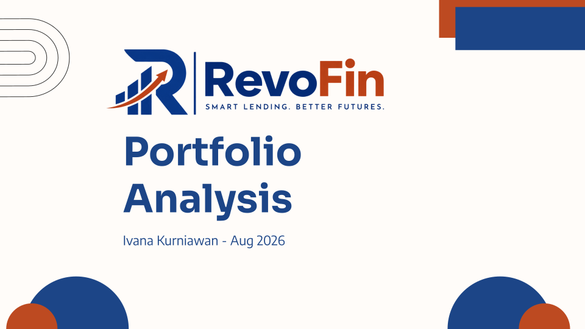
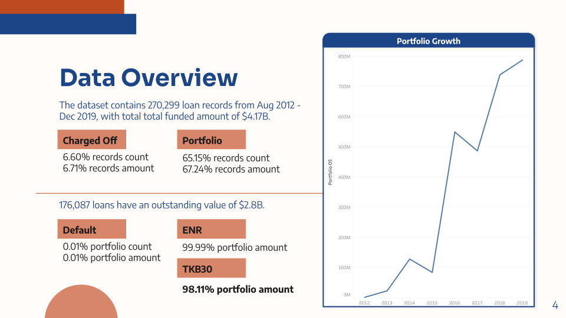
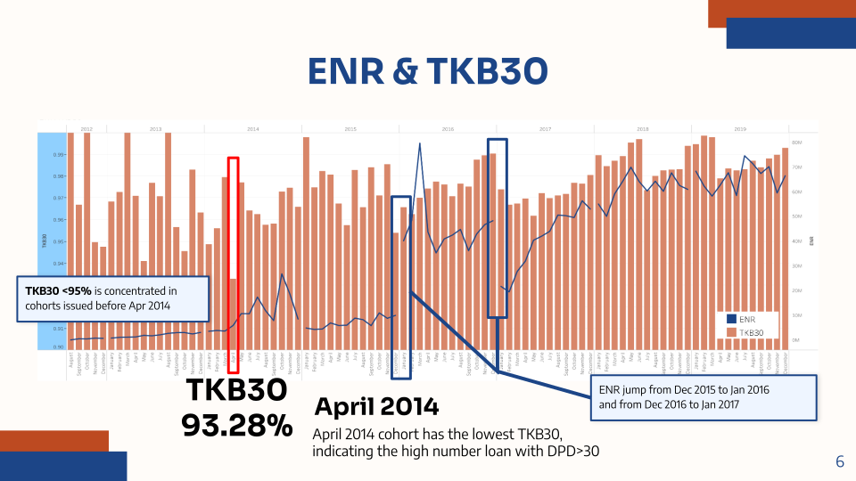
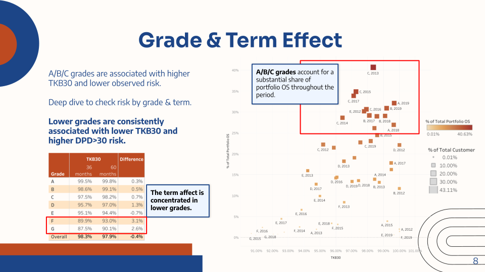
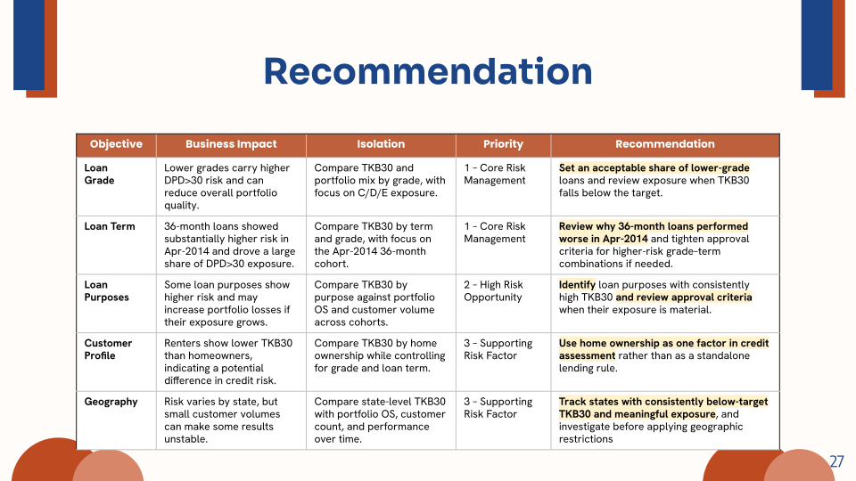

Credit Portfolio Risk Analysis
Analyzed a $4.17B loan portfolio to identify key risk drivers, investigate poor-performing cohorts, and recommend improvements to lending and portfolio monitoring.

Project Overview
Summary / Context
RevoFin wanted to understand the main drivers of loan portfolio risk and identify opportunities to improve lending practices. The analysis examined loan performance across cohorts, grades, terms, purposes, customer profiles, and geographic areas.
Goals
Assess portfolio performance, identify the strongest risk indicators, investigate poor-performing cohorts, and translate the findings into practical lending recommendations.
Process
Analyzed 270,299 loan records in SQL, defined portfolio risk metrics, reviewed performance trends, investigated the April 2014 anomaly, and compared risk across loan and customer characteristics.
Output
Identified loan grade as the clearest risk discriminator and highlighted the April 2014 cohort as a major portfolio anomaly. The analysis also found risk differences across loan terms, purposes, home ownership, and geography, leading to prioritized monitoring and lending recommendations.
Key Responsibilities
- Defined portfolio risk metrics, including TKB30, ENR, and outstanding DPD >30 exposure.
- Analyzed 270,299 loan records to assess portfolio growth and performance trends.
- Investigated the April 2014 cohort to identify drivers behind its unusually low TKB30.
- Compared portfolio risk across loan grade, term, purpose, customer profile, and geography.
- Prioritized risk factors and translated findings into lending and portfolio monitoring recommendations.
Tools & Methods
Tools
Methods
Recommendations
- Loan Grade: Set exposure limits for lower-grade loans and monitor C/D/E performance against TKB30 targets.
- Loan Term: Investigate the April 2014 36-month cohort and review approval criteria for higher-risk grade–term combinations.
- Loan Purpose: Monitor purposes with consistently weaker performance and review lending criteria when exposure becomes material.
- Customer Profile: Use home ownership as a supporting risk factor rather than a standalone lending rule.
- Geography: Monitor states with both meaningful exposure and consistently below-target TKB30 before introducing geographic restrictions.
Project Gallery




Disclaimer: This project was completed for educational and portfolio purposes. The data is provided by RevoU. Business scenarios used may be simulated or anonymized.